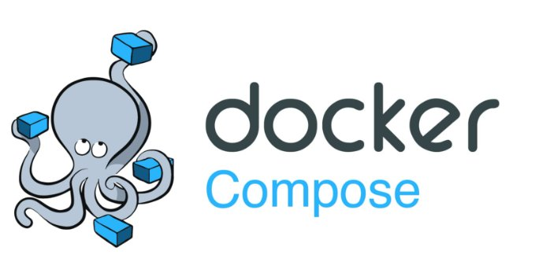

Connecter les entreprises et les usagers
- En communiquant avec le client et les différents acteurs impliqués, parfois en anglais.
- En faisant preuve d'une démarche scientifique.
- En choisissant les solutions et les technologies adaptées.
- En proposant des solutions respectueuses de l'environnement.
Apprentissages critiques
Mesurer, analyser et commenter les signaux.
J'ai mesuré et analysé des signaux électriques à l'oscilloscope numérique (Analog Discovery / WaveForms) et au générateur de fonctions : lecture d'amplitude, de période, de fréquence, et premiers tracés de spectres.
Savoir mesurer et interpréter un signal est indispensable pour vérifier la conformité d'une transmission et identifier une anomalie sur un support physique.
En TP avec l'Analog Discovery et WaveForms dans le cadre de R1.04, R1.13 (Maths du signal) et R2.05 (Signaux et systèmes pour les transmissions) : génération de signaux sinusoïdaux et carrés, mesures Vpp/Vrms/fréquence, et premiers réglages du déclenchement.
Le réglage du déclenchement (trigger) de l'oscilloscope pour stabiliser l'affichage d'un signal m'a demandé plusieurs essais avant de comprendre la logique.
J'ai acquis une méthode de lecture et d'interprétation des signaux, et compris l'impact des perturbations sur la qualité d'une mesure.
Je prendrais systématiquement des captures d'écran des formes d'onde pour constituer un dossier de référence lors des TPs.
Caractériser des systèmes de transmissions élémentaires et découvrir la modélisation mathématique de leur fonctionnement.
J'ai caractérisé des systèmes de transmission en étudiant leur modélisation mathématique : analyse spectrale de signaux sinusoïdaux et carrés avec WaveForms, calcul des harmoniques via les séries de Fourier, et étude des filtres RC (réponse en fréquence, diagramme de Bode).
signal/bruit) et les modèles mathématiques associés (théorème de Shannon, Nyquist).La modélisation mathématique d'un signal est la base du dimensionnement de toute liaison de transmission. Sans comprendre la composition fréquentielle d'un signal, il est impossible de choisir un filtre adapté ou d'évaluer une distorsion.
es, ce qui est fondamental pour choisir la bonne technologie.En TP avec l'Analog Discovery dans le cadre de R2.05 (Signaux et systèmes) et R2.14 (Maths des transmissions) : analyse FFT sur l'analyseur de spectre WaveForms, calcul du THD, vérification par les formules de Fourier et tracé de diagrammes de Bode.
ique et l'utilisation de simulations en TP.La conversion entre unités (Vpp, Vrms, dBV) et le lien entre les formules théoriques de Fourier et les raies mesurées sur l'analyseur de spectre ont été les points les plus délicats.
a nécessité plusieurs exercices d'application avant d'être à l'aise.J'ai compris le lien fondamental entre domaine temporel et fréquentiel, et acquis une méthode pour prévoir le spectre d'un signal avant de le mesurer.
que, et comment les paramètres physiques influencent directement la qualité de service.Je rédigerais mes calculs intermédiaires plus proprement pendant les TPs pour pouvoir les relire lors des révisions, plutôt que de tout refaire à partir des captures d'écran.
r ancrer la théorie dans des applications concrètes.Déployer des supports de transmission.
J'ai déployé des supports de transmission filaires : étude des caractéristiques des câbles réseau (catégories Cat5e/Cat6/Cat7, fibre optique), confection de câbles RJ45 droits et croisés, et mesures de qualification avec testeur de câble.
l sinusoïdal pur, mesure du THD, étude du signal carré (harmoniques impaires), analyse de la composante continue (offset) et vérification par développement en série de Fourier continuité et de longueur avec un testeur de câble.Le câblage physique est la fondation de toute infrastructure réseau. Une mauvaise sertissure ou un mauvais choix de câble peut provoquer des pertes de performance ou des pannes intermittentes difficiles à diagnostiquer.
Via les TPs R1.05 (Supports de transmission pour les réseaux) : étude des caractéristiques d'atténuation et de bande passante des différentes catégories de câbles, confection de câbles avec pince à sertir et dénudeur, tests avec testeur de câble.
L'ordre précis des fils dans le connecteur RJ45 selon la norme T568B et la manipulation de la pince à sertir pour avoir un contact propre ont demandé de la dextérité et plusieurs essais.
J'ai intégré l'importance du test systématique après chaque câblage et compris que la qualité physique d'un lien conditionne directement les performances réseau.
Je m'exercerais davantage à la sertissure sur des chutes de câble avant de réaliser les câbles définitifs, pour éviter le gaspillage de matériel.
Connecter les systèmes de ToIP.
J'ai configuré un serveur de téléphonie IP Asterisk sous Linux : création des comptes SIP dans pjsip.conf, mise en place du plan de numérotation dans extensions.conf, enregistrement de téléphones Fanvil et Cisco, et déploiement d'une messagerie vocale.
La ToIP (téléphonie sur IP) est la technologie téléphonique dominante en entreprise. Comprendre son fonctionnement et savoir configurer un IPBX est une compétence directement applicable en stage ou en alternance.
Via les TPs R2.04 (Initiation à la téléphonie d'entreprise) : déploiement d'Asterisk-alpine en VM, configuration des fichiers pjsip.conf et extensions.conf, enregistrement des téléphones physiques Fanvil et Cisco via l'interface web, et test des appels entre postes.
La syntaxe des fichiers de configuration d'Asterisk est stricte et peu intuitive. Une erreur dans pjsip.conf empêche tous les enregistrements sans message d'erreur clair.
J'ai compris le fonctionnement d'un système de téléphonie d'entreprise et le rôle des protocoles SIP/PJSIP et RTP dans l'établissement d'un appel.
Je testerais la configuration avec un seul compte avant d'en ajouter d'autres, pour isoler les problèmes dès le départ.
Communiquer avec un tiers (client, collaborateur...) et adapter son discours et sa langue à son interlocuteur.
J'ai pratiqué la communication technique écrite et orale : rédaction de comptes rendus de TP, présentations orales, et adaptation du discours selon l'interlocuteur (enseignant, camarade, contexte professionnel simulé).
CTION, VIDÉO) : routage inter-VLAN sur routeur Cisco série 800, DHCP par VLAN, et déploiement d'un serveur web accessible depuis tous les réseauxésentations orales en adaptant le niveau de technicité à l'audience.Un technicien réseau doit savoir communiquer aussi bien avec un collègue technique qu'avec un utilisateur non-technique. Cette compétence est aussi importante que les compétences techniques pour réussir en entreprise.
Via les modules R1.11/R211 Communication et les SAÉ : rédaction de rapports techniques, exposés oraux sur les projets de SAÉ, et mises en situation de communication professionnelle.
Trouver le bon niveau de détail technique selon l'interlocuteur est difficile : trop précis on perd le non-technicien, trop vague on perd en crédibilité face à un expert.
J'ai appris à reformuler les concepts techniques avec des analogies simples et à structurer mon propos (contexte, problème, solution, résultat) pour être compris rapidement.
Je demanderais systématiquement en début d'échange le niveau de connaissance de mon interlocuteur pour adapter d'emblée mon niveau de discours.

Concevoir des réseaux de communications électroniques.
Réaliser et optimiser le déploiement de supports de transmission.
Déployer des systèmes de ToIP et de vidéoconférence.
Déployer des systèmes de communications radio.
Concevoir des systèmes de transmissions de données numériques avancés.
Concevoir et déployer un système de communications radio.